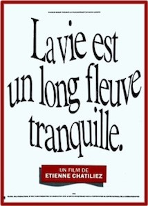
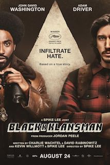

Patience Guisset
Student @le Wagon
Previously Customer advisor at Le Collectionist, my mission was to offer a new way of travelling by creating experiences - I joined Le Wagon to learn the necessary skills to launch my own start up :)
Come and seeSelection of Movies
IncendiesÀ la lecture du testament de leur mère, Jeanne et Simon se voient remettre deux enveloppes : l'une destinée à un père qu'ils croyaient mort, l'autre à un frère dont ils ignoraient l'existence. Jeanne voit dans ce legs la clé du silence de sa mère, enfermée dans un mutisme inexpliqué les semaines précédant sa mort. Elle décide immédiatement de partir au Moyen-Orient exhumer le passé de sa famille. |
|
 |
La vie est un long fleuve tranquilleDans une petite ville du nord de la France, deux familles nombreuses, les Le Quesnoy et les Groseille, d'origines bien différentes, n'auraient jamais dû se rencontrer. Cependant, c'était sans compter sur Josette, l'infirmière devouée du docteur Mavial, amoureuse et lasse d'attendre qu'il quitte sa femme. Dans un moment d'égarement la douce infirmière a échangé deux nouveau-nés, un Groseille contre un Le Quesnoy, pour se venger de la vie et du docteur. |
|

|
BlackkklansmanAu début des années 70, au plus fort de la lutte pour les droits civiques, plusieurs émeutes raciales éclatent dans les grandes villes des États-Unis. Ron Stallworth devient le premier officier Noir américain du Colorado Springs Police Department, mais son arrivée est accueillie avec scepticisme, voire avec une franche hostilité, par les agents les moins gradés du commissariat. Prenant son courage à deux mains, Stallworth va tenter de faire bouger les lignes et, peut-être, de laisser une trace dans l'histoire. Il se fixe alors une mission des plus périlleuses : infiltrer le Ku Klux Klan pour en dénoncer les exactions |
About this page
Réalisée pendant mon passage @lewagon